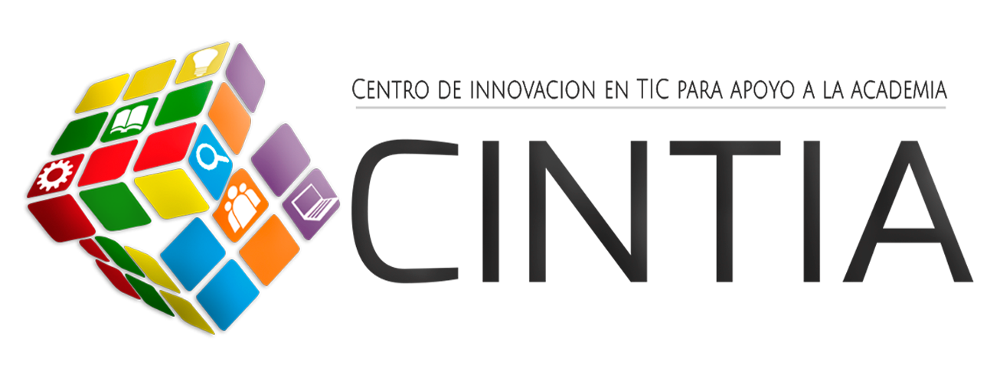

|
Quienes Somos |
Preguntas Frecuentes |
Servicios TIC |
Cursos |
Estadísticas |
Capacitaciones |
|
Somos un ente adscrito a la Vicerrectoría Académica que articula la gestión e innovación en TIC con el apoyo de las Facultades, oficina de planeación, oficina de sistemas y oficina de comunicaciones |
 |
NATURALEZA JURÍDICA Y COMPETENCIAS |
|
|
El Centro de Innovación en TIC para apoyo a la Academia (CINTIA), está adscrito a la Vicerrectoría Académica y es un ente creado para soportar los procesos misionales mediante la incorporación, uso pedagógico, apropiación, investigación e innovación con las Tecnologías de la Información y la Comunicación, como una estrategia institucional para mejorar la calidad de los procesos docencia, investigación y extensión. Las actividades de CINTIA están enmarcadas en las siguientes líneas de trabajo: Gestión de infraestructura física y tecnológica para la innovación en TIC, Formación del recurso humano en TIC, Analítica del Aprendizaje, Integración de currículo y TICs, Gestión de recursos educativos digitales abiertos, Gestión de la Virtualización, Pedagogía y didáctica de las TIC, uso, apropiación e innovación de las TIC en la investigación y la Extensión, realización audiovisual, Gestión Tecnológica y Gobernanza, Laboratorios de Supercomputación, articulando la comunidad académica representadas en las facultades y la oficina de planeación. |
|
A través de nuestra mesa de ayuda, realiza tus solicitudes a cada una de las dependencias del área de sistemas, biblioteca, centro de idiomas, entre otras.